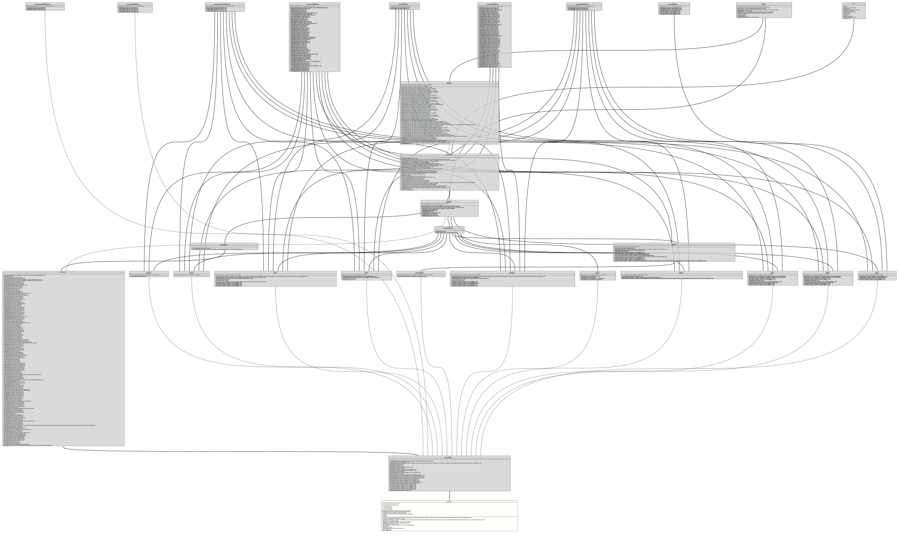

Class TypeSymbol
java.lang.Object
org.tquadrat.foundation.xml.builder.internal.XMLElementImpl
org.tquadrat.foundation.xml.builder.spi.XMLElementAdapter
org.tquadrat.foundation.svg.internal.SVGElementImpl
org.tquadrat.foundation.svg.SVGElementAdapter
org.tquadrat.foundation.javadoc.umlgraph.TypeSymbol
- All Implemented Interfaces:
org.tquadrat.foundation.svg.AllowsConditionalProcessingAttributes,org.tquadrat.foundation.svg.AllowsDocumentElementEventAttributes,org.tquadrat.foundation.svg.AllowsDocumentEventAttributes,org.tquadrat.foundation.svg.AllowsGlobalEventAttributes,org.tquadrat.foundation.svg.AllowsGraphicalEventAttributes,org.tquadrat.foundation.svg.AllowsPresentationAttributes,org.tquadrat.foundation.svg.AllowsStyleAttributes,org.tquadrat.foundation.svg.AllowsXLinkAttributes,org.tquadrat.foundation.svg.SVGClipPath,org.tquadrat.foundation.svg.SVGElement,org.tquadrat.foundation.svg.SVGElementWithChildren,org.tquadrat.foundation.svg.SVGGroup,org.tquadrat.foundation.svg.SVGLine,org.tquadrat.foundation.svg.SVGMarker,org.tquadrat.foundation.svg.SVGPath,org.tquadrat.foundation.svg.SVGPositionedMarker,org.tquadrat.foundation.svg.SVGRectangle,org.tquadrat.foundation.svg.SVGStyle,org.tquadrat.foundation.svg.SVGSymbol,org.tquadrat.foundation.svg.SVGText,org.tquadrat.foundation.svg.SVGTSpan,org.tquadrat.foundation.svg.SVGUse,org.tquadrat.foundation.xml.builder.spi.Element,org.tquadrat.foundation.xml.builder.XMLElement
@ClassVersion(sourceVersion="$Id: TypeSymbol.java 820 2020-12-29 20:34:22Z tquadrat $")
@API(status=INTERNAL,
since="0.0.5")
public final class TypeSymbol
extends org.tquadrat.foundation.svg.SVGElementAdapter
A specialisation of
SVGSymbol
for the visualisation of
UMLTypeElement
instances.- Author:
- Thomas Thrien (thomas.thrien@tquadrat.org)
- Version:
- $Id: TypeSymbol.java 820 2020-12-29 20:34:22Z tquadrat $
- Since:
- 0.0.5
- UML Diagram
-

UML Diagram for "org.tquadrat.foundation.javadoc.umlgraph.TypeSymbol"
{kind=link}
-
Nested Class Summary
Nested classes/interfaces inherited from interface org.tquadrat.foundation.xml.builder.XMLElement
org.tquadrat.foundation.xml.builder.XMLElement.Flags -
Field Summary
FieldsModifier and TypeFieldDescriptionstatic final StringThe name for the CSS class that defines the look for external classes: "externalClass".static final StringThe name for the CSS class that defines the look for the focus class: "focusClass".static final StringThe name for the CSS class that defines the look for other classes: "otherClass".private DimensionThe dimension of the base rectangle for UML graph representing this type element.private final DimensionThe dimension for the SVG element representing this type element in the UML diagram.private final PointThe local offset for the base rectangle.private final UMLTypeElementThe instance ofUMLTypeElementthat is represented by thisTypeSymbol.private doubleThe X coordinate of the upper left corner of the symbol in the UML diagram.private doubleThe Y coordinate of the upper left corner of the symbol in the UML diagram.static final doubleThe width of a character for a SVG graph: 6.0 px.static final doubleThe height of a SVG text line: 11.0 px.static final doubleThe vertical border inside a rectangle: 2.0 px.static final doubleThe spacing before and after a SVG text: 5.0 px.Fields inherited from interface org.tquadrat.foundation.svg.AllowsConditionalProcessingAttributes
CONDITIONALPROCESSING_ATTRIBUTESFields inherited from interface org.tquadrat.foundation.svg.AllowsDocumentElementEventAttributes
DOCUMENTELEMENTEVENT_ATTRIBUTESFields inherited from interface org.tquadrat.foundation.svg.AllowsDocumentEventAttributes
DOCUMENTEVENT_ATTRIBUTESFields inherited from interface org.tquadrat.foundation.svg.AllowsGlobalEventAttributes
GLOBALEVENT_ATTRIBUTESFields inherited from interface org.tquadrat.foundation.svg.AllowsGraphicalEventAttributes
GRAPHICALEVENT_ATTRIBUTESFields inherited from interface org.tquadrat.foundation.svg.AllowsPresentationAttributes
PRESENTATION_ATTRIBUTESFields inherited from interface org.tquadrat.foundation.svg.AllowsStyleAttributes
STYLE_ATTRIBUTESFields inherited from interface org.tquadrat.foundation.svg.AllowsXLinkAttributes
XLINK_ATTRIBUTESFields inherited from interface org.tquadrat.foundation.xml.builder.spi.Element
EMPTY_Element_ARRAYFields inherited from interface org.tquadrat.foundation.svg.SVGClipPath
EMPTY_SVGClipPath_ARRAYFields inherited from interface org.tquadrat.foundation.svg.SVGElement
CORE_ATTRIBUTES, EMPTY_SVGElement_ARRAYFields inherited from interface org.tquadrat.foundation.svg.SVGGroup
EMPTY_SVGGroup_ARRAYFields inherited from interface org.tquadrat.foundation.svg.SVGLine
EMPTY_SVGLine_ARRAYFields inherited from interface org.tquadrat.foundation.svg.SVGMarker
EMPTY_SVGMarker_ARRAYFields inherited from interface org.tquadrat.foundation.svg.SVGPath
EMPTY_SVGPath_ARRAYFields inherited from interface org.tquadrat.foundation.svg.SVGPositionedMarker
EMPTY_SVGPositionedMarker_ARRAYFields inherited from interface org.tquadrat.foundation.svg.SVGRectangle
EMPTY_SVGRectangle_ARRAYFields inherited from interface org.tquadrat.foundation.svg.SVGStyle
EMPTY_SVGStyle_ARRAYFields inherited from interface org.tquadrat.foundation.svg.SVGSymbol
EMPTY_SVGSymbol_ARRAYFields inherited from interface org.tquadrat.foundation.svg.SVGText
EMPTY_SVGText_ARRAYFields inherited from interface org.tquadrat.foundation.svg.SVGTSpan
EMPTY_SVGTSpan_ARRAYFields inherited from interface org.tquadrat.foundation.svg.SVGUse
EMPTY_SVGUse_ARRAYFields inherited from interface org.tquadrat.foundation.xml.builder.XMLElement
EMPTY_XMLElement_ARRAY, NO_APPEND -
Constructor Summary
ConstructorsConstructorDescriptionTypeSymbol(UMLDocument parent, UMLTypeElement typeElement, boolean isFocusClass, boolean apiOnly, boolean isIncludedInOutput) Creates a newTypeSymbolinstance. -
Method Summary
Modifier and TypeMethodDescriptionfinal org.tquadrat.foundation.svg.SVGSymbolReturns thisTypeSymbolinstance as an instance ofSVGPath.final org.tquadrat.foundation.svg.SVGUsecreateUse(Collection<UMLConnector> startingConnectors, Collection<UMLConnector> endingConnectors) Returns aSVGUseelement for this symbol and calculates the connector end points.final booleanfinal DimensionReturns the dimension for the SVG element representing the type element in the UML diagram.final PointReturns the position of the SVG element representing this UML class.final StringReturns the qualified name of the type element that is represented by this symbol.final UMLTypeElementReturns the type element that is represented by this symbol.final inthashCode()final booleanReturnstrueif the type element represented by this type symbol is an interface.final voidsetBaseDimension(double width, double height) Sets the base dimension for the SVG element representing the type element in the UML diagram.final voidsetX(double x) Sets the X coordinate for the upper left corner of the symbol for the class diagram.final voidsetY(double y) Sets the Y coordinate for the upper left corner of the symbol for the class diagram.Methods inherited from class org.tquadrat.foundation.svg.SVGElementAdapter
addStyle, defineLine, getStyleSheet, merge, setClipPathUnits, setDx, setDy, setLengthAdjust, setMarkerHeight, setMarkerUnits, setMarkerWidth, setOrientation, setOrientation, setPathDefinition, setPathLength, setPathLength, setPosition, setReferenceX, setReferenceY, setRotate, setTextLength, setX, setX1, setX2, setY, setY1, setY2, toStringMethods inherited from class org.tquadrat.foundation.svg.internal.SVGElementImpl
addChild, setAbortHandler, setActivationHandler, setAlignmentBaseline, setAttribute, setBaselineShift, setCancelHandler, setCanPlayHandler, setCanPlayThroughHandler, setChangeHandler, setClass, setClickHandler, setClip, setClipPath, setClipRule, setCloseHandler, setColor, setColorInterpolation, setColorInterpolationFilters, setColorProfile, setColorRendering, setCopyHandler, setCueChangeHandler, setCursor, setCutHandler, setDblClickHandler, setDescription, setDirection, setDisplay, setDominantBaseline, setDragEndHandler, setDragEnterHandler, setDragExitHandler, setDragHandler, setDragLeaveHandler, setDragOverHandler, setDragStartHandler, setDropHandler, setDurationChangeHandler, setEmptiedHandler, setEnableBackground, setEndedHandler, setErrorHandler, setExternalResourcesRequired, setFill, setFillOpacity, setFillRule, setFilter, setFloodColor, setFloodOpacity, setFocusHandler, setFocusInHandler, setFocusOutHandler, setFontFamily, setFontSize, setFontSizeAdjust, setFontStretch, setFontStyle, setFontVariant, setFontWeight, setGlyphOrientationHorizontal, setGlyphOrientationVertical, setHeight, setId, setImageRendering, setInputHandler, setInvalidHandler, setKerning, setKeyDownHandler, setKeyPressHandler, setKeyUpHandler, setLang, setLetterSpacing, setLightingColor, setLoadedDataHandler, setLoadedMetadataHandler, setLoadHandler, setLoadStartHandler, setMarkerEnd, setMarkerMid, setMarkerStart, setMask, setMouseDownHandler, setMouseEnterHandler, setMouseLeaveHandler, setMouseMoveHandler, setMouseOutHandler, setMouseOverHandler, setMouseUpHandler, setMouseWheelHandler, setOpacity, setOverflow, setPasteHandler, setPathLength, setPauseHandler, setPlayHandler, setPlayingHandler, setPointerEvents, setPreserveAspectRatio, setPreserveSpace, setProgressHandler, setRateChangeHandler, setReference, setRequiredExtensions, setRequiredFeatures, setResetHandler, setResizeHandler, setRx, setRy, setScrollHandler, setSeekedHandler, setSeekingHandler, setSelectHandler, setShapeRendering, setShowHandler, setStalledHandler, setStopColor, setStopOpacity, setStroke, setStrokeDashArray, setStrokeDashOffset, setStrokeLineCap, setStrokeLineJoin, setStrokeMiterLimit, setStrokeOpacity, setStrokeWidth, setStyle, setSubmitHandler, setSuspendHandler, setSystemLanguage, setTabIndex, setTextAnchor, setTextDecoration, setTextRendering, setTimeUpdateHandler, setTitle, setToggleHandler, setTransform, setUnicodeBidi, setUnloadHandler, setVectorEffect, setViewBox, setVisibility, setVolumeChangeHandler, setWaitHandler, setWidth, setWordSpacing, setWritingMode, setX, setXlinkActuate, setXLinkArcRole, setXLinkReference, setXLinkRole, setXLinkShow, setXLinkTitle, setXLinkType, setXMLBase, setXMLId, setXMLLang, setY, updateRegistriesMethods inherited from class org.tquadrat.foundation.xml.builder.internal.XMLElementImpl
addCDATA, addChild, addComment, addPredefinedMarkup, addText, getAttribute, getAttributes, getChildren, getElementName, getFlags, getNamespaces, getParent, getSortOrder, hasChildren, registerAttributeSequence, registerAttributeSequence, registerValidAttributes, registerValidChildren, retrieveValidAttributes, retrieveValidChildren, setAttribute, setNamespace, setNamespace, setNamespace, setNamespace, setNamespace, setParent, toStringMethods inherited from class java.lang.Object
clone, finalize, getClass, notify, notifyAll, wait, wait, waitMethods inherited from interface org.tquadrat.foundation.svg.AllowsConditionalProcessingAttributes
setExternalResourcesRequired, setRequiredExtensions, setRequiredFeatures, setSystemLanguageMethods inherited from interface org.tquadrat.foundation.svg.AllowsDocumentElementEventAttributes
setCopyHandler, setCutHandler, setPasteHandlerMethods inherited from interface org.tquadrat.foundation.svg.AllowsDocumentEventAttributes
setAbortHandler, setErrorHandler, setResizeHandler, setScrollHandler, setUnloadHandlerMethods inherited from interface org.tquadrat.foundation.svg.AllowsGlobalEventAttributes
setCancelHandler, setCanPlayHandler, setCanPlayThroughHandler, setChangeHandler, setClickHandler, setCloseHandler, setCueChangeHandler, setDblClickHandler, setDragEndHandler, setDragEnterHandler, setDragExitHandler, setDragHandler, setDragLeaveHandler, setDragOverHandler, setDragStartHandler, setDropHandler, setDurationChangeHandler, setEmptiedHandler, setEndedHandler, setErrorHandler, setFocusHandler, setInputHandler, setInvalidHandler, setKeyDownHandler, setKeyPressHandler, setKeyUpHandler, setLoadedDataHandler, setLoadedMetadataHandler, setLoadHandler, setLoadStartHandler, setMouseDownHandler, setMouseEnterHandler, setMouseLeaveHandler, setMouseMoveHandler, setMouseOutHandler, setMouseOverHandler, setMouseUpHandler, setMouseWheelHandler, setPauseHandler, setPlayHandler, setPlayingHandler, setProgressHandler, setRateChangeHandler, setResetHandler, setResizeHandler, setScrollHandler, setSeekedHandler, setSeekingHandler, setSelectHandler, setShowHandler, setStalledHandler, setSubmitHandler, setSuspendHandler, setTimeUpdateHandler, setToggleHandler, setVolumeChangeHandler, setWaitHandlerMethods inherited from interface org.tquadrat.foundation.svg.AllowsGraphicalEventAttributes
setActivationHandler, setFocusInHandler, setFocusOutHandlerMethods inherited from interface org.tquadrat.foundation.svg.AllowsPresentationAttributes
setAlignmentBaseline, setBaselineShift, setClip, setClipPath, setClipRule, setColor, setColorInterpolation, setColorInterpolationFilters, setColorProfile, setColorRendering, setCursor, setDirection, setDisplay, setDominantBaseline, setEnableBackground, setFill, setFillOpacity, setFillRule, setFilter, setFloodColor, setFloodOpacity, setFontFamily, setFontSize, setFontSizeAdjust, setFontStretch, setFontStyle, setFontVariant, setFontWeight, setGlyphOrientationHorizontal, setGlyphOrientationVertical, setImageRendering, setKerning, setLetterSpacing, setLightingColor, setMarkerEnd, setMarkerMid, setMarkerStart, setMask, setOpacity, setOverflow, setPointerEvents, setShapeRendering, setStopColor, setStopOpacity, setStroke, setStrokeDashArray, setStrokeDashOffset, setStrokeLineCap, setStrokeLineJoin, setStrokeMiterLimit, setStrokeOpacity, setStrokeWidth, setTextAnchor, setTextDecoration, setTextRendering, setUnicodeBidi, setVectorEffect, setVisibility, setWordSpacing, setWritingModeMethods inherited from interface org.tquadrat.foundation.svg.AllowsStyleAttributes
setClass, setStyleMethods inherited from interface org.tquadrat.foundation.svg.AllowsXLinkAttributes
setXlinkActuate, setXLinkArcRole, setXLinkReference, setXLinkRole, setXLinkShow, setXLinkTitle, setXLinkTypeMethods inherited from interface org.tquadrat.foundation.xml.builder.spi.Element
getAttribute, getAttributes, getChildren, getElementName, getNamespaces, getParent, hasChildren, isBlockMethods inherited from interface org.tquadrat.foundation.svg.SVGElement
addComment, getSVGElementCategory, setId, setLang, setPreserveSpace, setTabIndex, setTitle, setXMLBase, setXMLId, setXMLLangMethods inherited from interface org.tquadrat.foundation.svg.SVGElementWithChildren
addChild, setDescriptionMethods inherited from interface org.tquadrat.foundation.svg.SVGLine
setEndPoint, setPathLength, setStartPointMethods inherited from interface org.tquadrat.foundation.svg.SVGMarker
setExternalResourcesRequired, setMarkerDimensions, setPreserveAspectRatio, setReferencePoint, setTransform, setViewBoxMethods inherited from interface org.tquadrat.foundation.svg.SVGPath
setPathLengthMethods inherited from interface org.tquadrat.foundation.svg.SVGRectangle
defineRectangle, setHeight, setPathLength, setRx, setRy, setWidth, setX, setYMethods inherited from interface org.tquadrat.foundation.svg.SVGSymbol
setExternalResourcesRequired, setPreserveAspectRatio, setViewBoxMethods inherited from interface org.tquadrat.foundation.svg.SVGText
addCDATA, addTextMethods inherited from interface org.tquadrat.foundation.svg.SVGTSpan
addCDATA, addTextMethods inherited from interface org.tquadrat.foundation.svg.SVGUse
setHeight, setWidth, setX, setYMethods inherited from interface org.tquadrat.foundation.xml.builder.XMLElement
addCDATA, addCDATA, addCDATA, addCDATA, addCDATA, addCDATA, addCDATA, addCDATA, addCDATA, addCDATA, addCDATA, addCDATA, addCDATA, addText, addText, addText, addText, addText, addText, addText, addText, addText, addText, addText, addText, addText, setAttribute, setAttribute, setAttribute, setAttribute, setAttribute, setAttribute, setAttribute, setAttribute, setAttribute, setAttribute, setAttribute, setAttribute, setAttributeIfNotEmpty, setAttributeIfNotEmpty
-
Field Details
-
CSSClass_ExternalClass
The name for the CSS class that defines the look for external classes: "externalClass".- See Also:
-
CSSClass_FocusClass
The name for the CSS class that defines the look for the focus class: "focusClass".- See Also:
-
CSSClass_OtherClass
The name for the CSS class that defines the look for other classes: "otherClass".- See Also:
-
SVG_CHAR_WIDTH
The width of a character for a SVG graph: 6.0 px.- See Also:
-
SVG_LINE_HEIGHT
The height of a SVG text line: 11.0 px.- See Also:
-
SVG_LINE_SPACING
The vertical border inside a rectangle: 2.0 px.- See Also:
-
SVG_TEXT_SPACING
The spacing before and after a SVG text: 5.0 px.- See Also:
-
m_BaseDimension
The dimension of the base rectangle for UML graph representing this type element. -
m_Dimension
The dimension for the SVG element representing this type element in the UML diagram. -
m_Offset
The local offset for the base rectangle. -
m_TypeElement
The instance ofUMLTypeElementthat is represented by thisTypeSymbol. -
m_X
The X coordinate of the upper left corner of the symbol in the UML diagram. -
m_Y
The Y coordinate of the upper left corner of the symbol in the UML diagram.
-
-
Constructor Details
-
TypeSymbol
public TypeSymbol(UMLDocument parent, UMLTypeElement typeElement, boolean isFocusClass, boolean apiOnly, boolean isIncludedInOutput) Creates a newTypeSymbolinstance.- Parameters:
parent- The UML document that contains the type element.typeElement- The type element that is represented by this instance ofTypeSymbol.isFocusClass-trueif the given type element is the focus class of the UML graph.apiOnly-trueto show only the API parts of the type,falseif also the implementation internals are shown.isIncludedInOutput-trueif the type element is shown in the current output,falseotherwise.
-
-
Method Details
-
asSVGSymbol
Returns thisTypeSymbolinstance as an instance ofSVGPath.- Returns:
- This instance.
-
createUse
public final org.tquadrat.foundation.svg.SVGUse createUse(Collection<UMLConnector> startingConnectors, Collection<UMLConnector> endingConnectors) Returns aSVGUseelement for this symbol and calculates the connector end points.- Parameters:
startingConnectors- The connectors that will originate from this type element.endingConnectors- The connectors that will end at this type element.- Returns:
- The new use element.
-
equals
-
getDimension
Returns the dimension for the SVG element representing the type element in the UML diagram.- Returns:
- The dimension.
-
getPosition
Returns the position of the SVG element representing this UML class.- Returns:
- The coordinates of the upper left corner of the class diagram.
-
getQualifiedName
Returns the qualified name of the type element that is represented by this symbol.- Returns:
- The qualified name.
-
getTypeElement
Returns the type element that is represented by this symbol.- Returns:
- The type element.
-
hashCode
-
isInterface
Returnstrueif the type element represented by this type symbol is an interface. Different fromElementKind.isInterface(), this method will returnfalseif the type element is anannotation.- Returns:
trueif the type element represented by this type symbol is an interface,falseotherwise.
-
setBaseDimension
Sets the base dimension for the SVG element representing the type element in the UML diagram.- Parameters:
width- The width for the SVG element.height- The height for the SVG element.
-
setX
Sets the X coordinate for the upper left corner of the symbol for the class diagram.- Parameters:
x- The X coordinate.
-
setY
Sets the Y coordinate for the upper left corner of the symbol for the class diagram.- Parameters:
y- The Y coordinate.
-